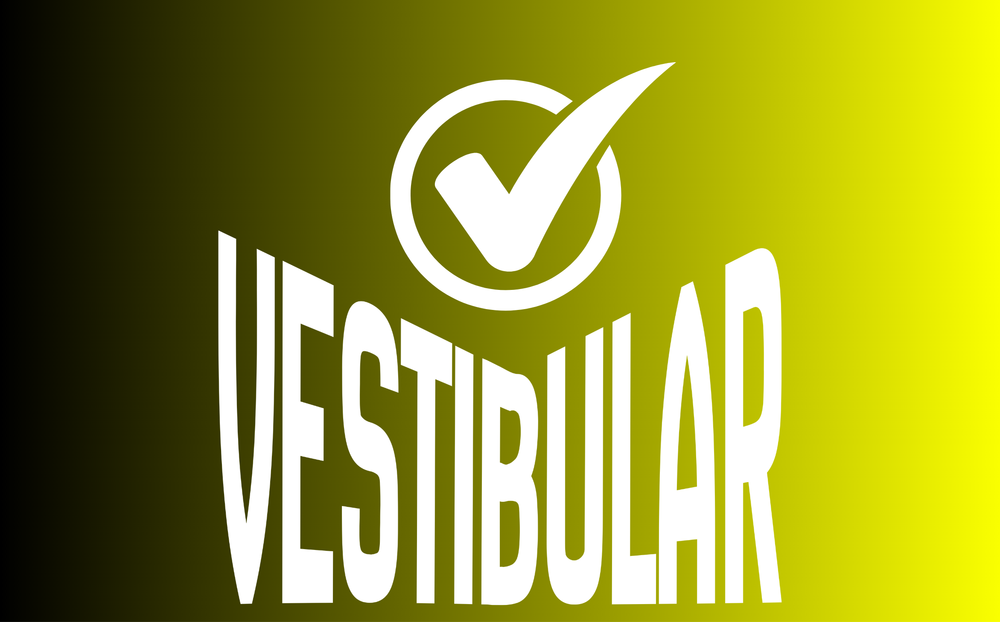

5.000+
Alunos
60
Unidades
300+
Projetos
Conecte-se com alunos de todas as unidades da Fatec
O Fatecanos é a rede de networking dos alunos Fatec. Encontre colegas de outros cursos e unidades, desenvolva projetos em equipe e cresça junto com a comunidade.
Fazer parteFaça parte da comunidade Fatecanos
Quer colaborar em projetos ou receber ajudar de outro Fatecano ?
Entrar.png)
